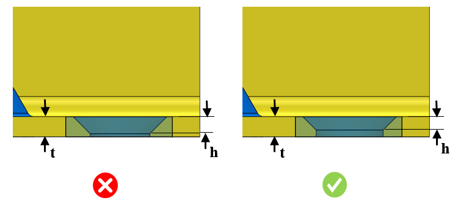

皿穴の最大深さは、指定された値以下である必要があります。
皿穴加工およびざぐり穴加工は、特に数量が限られている場合や機械加工が必要な場合には、コストのかかる作業となることがあります。
これらの形状は、必要不可欠でない限り、避けるべきです。
皿穴の最大深さは、板金厚さの 0.6 倍以下である必要があります。
ルール UI では、材料の一覧が 材料マッピング（Map Material） から読み込まれ、ユーザーは材料およびそれぞれの値を設定することができます。
材料とその値を設定した後、Ctrl+M コマンドを使用して、ルール UI 上で材料グループおよびグレードとともに、設定済み材料の一覧をフィルタリングして表示できます。同じキー（Ctrl+M）を使用して、フィルターをリセットすることができます。

ここでは、
t = 板金厚さ
h = 皿穴の最大深さ